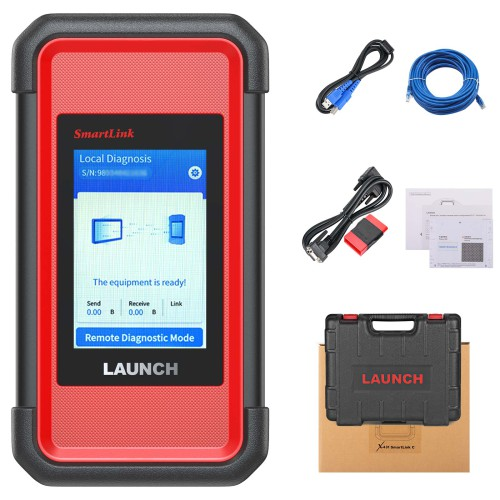
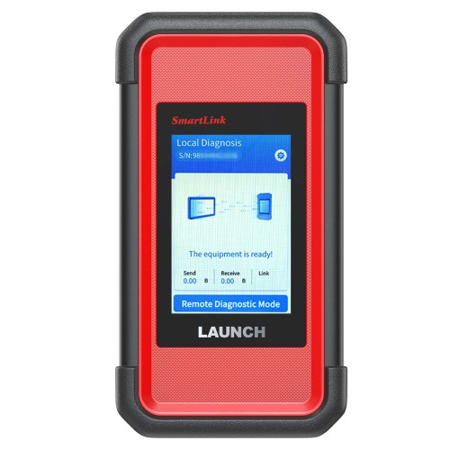
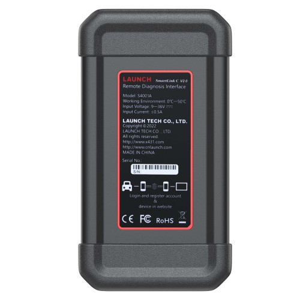
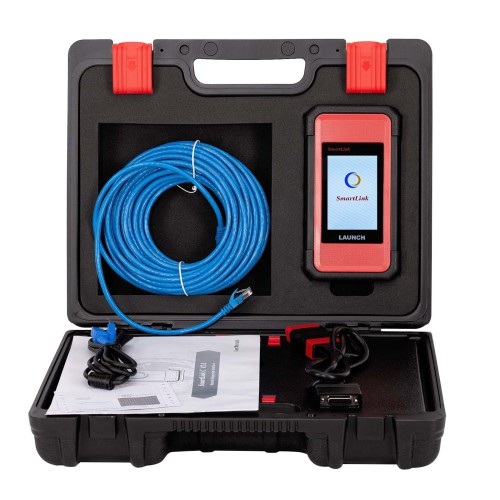

Model S4001A. Pasang di port OBD mobil, dan bengkel Anda langsung terhubung ke teknisi pabrik kami di China — bisa diagnosa mobil listrik China tanpa alat OEM mahal. Mendukung mode lokal & jarak jauh, koneksi LAN/WAN stabil.
Harga: ± Rp 6.500.000 (termasuk kabel OBD, kabel LAN, manual, hard case)




Gambar produk asli; isi paket dapat sedikit berbeda.
Colok ke port OBD mobil — tanpa beli tool OEM untuk tiap merek.
Mendukung LAN/WAN kabel — sesi diagnosa jarak jauh lebih stabil.
Dipadukan layanan remote kami, teknisi pabrik di China diagnosa dengan alat OEM.
| Model | S4001A (SmartLink C V2.0) |
|---|---|
| Tipe | Remote Diagnosis Interface |
| Suhu Kerja | 0°C – 50°C |
| Tegangan Input | 9 – 36 V |
| Arus Input | ≤ 0.5 A |
| Port | DB-15 diagnostik, LAN/WAN, Data I/O, DC-IN |
| Mode | Diagnosa Lokal + Jarak Jauh |
| Asal | China · Launch (LAUNCH TECH CO., LTD.) |
Harga ± Rp 6.500.000 (lengkap dengan kabel & hard case). Klik pesan → kami konfirmasi stok, ongkir & cara pembayaran via WhatsApp.
Pembayaran: transfer / QRIS (info dikirim setelah konfirmasi). Pembayaran online di web segera hadir.